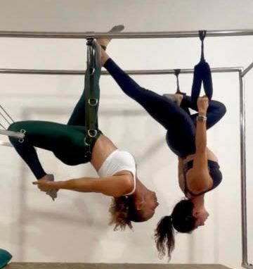
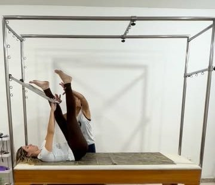
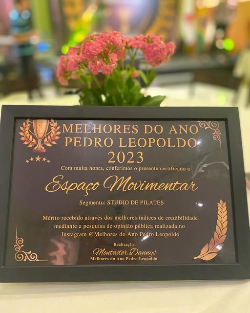

Volte a se mover.
Fisioterapia e pilates em Pedro Leopoldo e Sete Lagoas.
Crianças
Paciência e técnica em cada fase do desenvolvimento.
- Fisioterapia neurofuncional infantilTreino de marcha com esteira adaptada e suporte de peso corporal.
- Fisioterapia respiratóriaTécnicas manuais para tirar a secreção, como na bronquiolite.
- ÓrtesesConfecção sob medida para apoiar o desenvolvimento.
Adultos
Dor, lesão ou cirurgia: o tratamento começa por entender o seu corpo.
- Fisioterapia ortopédicaDores, lesões e recuperação depois de cirurgia.
- Fisioterapia cardiorrespiratóriaMais fôlego e resistência no dia a dia.
- PilatesCadillac e Reformer para postura, força e mobilidade.
- Nutrição e yoga[confirmar]
Esporte
Um paciente passou por reabilitação de lesão ligamentar aqui e completou uma meia maratona. [confirmar autorização]
- Prevenção de lesõesFortalecimento focado no seu esporte.
- Volta ao esporteReabilitação até voltar a treinar e competir.
Como funciona
Avaliação
A fisioterapeuta entende sua queixa, sua rotina e seu objetivo.
Plano
Você recebe um tratamento feito para o seu caso, com fisioterapia, pilates ou os dois.
Evolução
Cada sessão é acompanhada e ajustada até você voltar a fazer o que gosta.
Pilates nos aparelhos
Cadillac e Reformer para força, postura e mobilidade.


Melhores do Ano de Pedro Leopoldo
Eleito na categoria estúdio de pilates, em pesquisa de opinião com o público. Começou com atendimentos na sala de casa e hoje tem três unidades.

Agende na unidade mais perto
Cada unidade tem o seu WhatsApp.
Pedro Leopoldo, Centro
R. Vinte e Sete de Janeiro, 31, Centro
(31) 99961-3846
[horários]
Pedro Leopoldo, Andiara
R. Jaguara, 772, Parque Andiara
(31) 99961-3846
[horários]
Sete Lagoas
R. Sen. Salgado Filho, 254, Canaã
(31) 98719-2014
[horários]
Fez tratamento com a gente?
Sua avaliação no Google ajuda outras pessoas a encontrar a clínica certa.